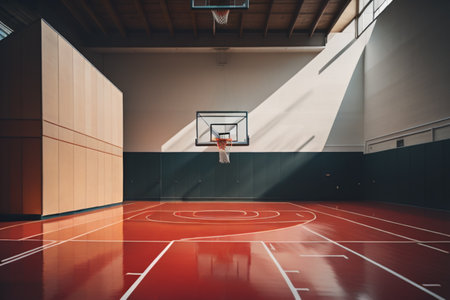
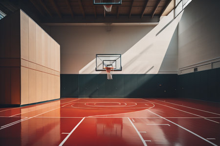

Basquetbool
 

Posiciones en el basquetbool
- Base
- Escolta
- Alero
- Ala-pívot
- Pivot
Dentro del juego
- Violaciones
- Faltas
¿Qué son las violaciones?
Una violación es una infracción de las reglas de juego, penalizada con un saque de fondo o banda para el equipo contrario desde el punto más cercano al de la infracción.

¿Qué son los fault?
La falta personal es una infracción en el ámbito del baloncesto. Cada jugador tiene un límite de 5 faltas para dar por partido, luego de las cuales deberá ser sustituido y no podrá volver a ingresar. Si el equipo no tiene suplente disponible, ya sea porque todos salieron por faltas o por lesión que impida a alguno ingresar, quedará con 4 jugadores en campo. El límite mínimo para que el partido continúe son 2 jugadores en cada conjunto, para poder realizar un movimiento básico cómo es sacar de banda y que un compañero reciba dentro de la cancha.

Tipos de fault
Faltas personales
Cuando hay contacto ilegal entre dos oponentes se produce una falta personal. Una falta realizada sobre un jugador que está lanzando corresponde el mismo número de tiros libres que lo que valdría su canasta (puede ser de dos o tres). Si el jugador logra lanzar igual y convierte, se gana los puntos y suma un tiro libre extra. Además de en situaciones de tiro, se pueden cometer faltas personales en la carga del rebote, al intentar robar el balón o ante una finta del oponente. Todo este detalle corresponde a las faltas personales defensivas. Como en todo lo relacionado al baloncesto, las situaciones se dividen entre defensivas y ofensivas. Se llama falta ofensiva cuando el equipo del jugador que la comente tiene el balón en su poder. Las situaciones más habituales para cometer faltas ofensivas son al poner una cortina o bloqueo (el jugador no puede moverse y deben esperar que el compañero pase con el balón). Otra situación, quizás la que más se ve, es cuando el jugador con el balón generar contacto con su defensor, mientras éste está con la posición fija y sin moverse. Normalmente el contacto generado por el atacante con el hombro chocando contra el pecho del defensor se pita como falta ofensiva.
Faltas Técnicas
A diferencia de las faltas personales, que son de carácter físico, las faltas técnicas del baloncesto son en su mayoría por conductas o expresiones inapropiadas. Son posibles destinatarios de este tipo de faltas tanto jugadores que se encuentran dentro del campo como los que están en la banca. Inclusive a cualquier miembro del cuerpo técnico. Se pueden dividir en dos orígenes, conductual y administrativo.
De caracter conductual:
- Hacer caso omiso a las advertencias de los árbitros.
- Tocar irrespetuosamente a los referís, oficiales de mesa o banca del equipo.
- Utilizar lenguaje irrespetuoso o gestos que puedan ofender.
De orden administrativo:
- Molestar a un adversario o impedir su visión agitando las manos cerca de sus ojos.
- Retrasar el juego tocando el balón después de que el balón atraviese la canasta.
- Retrasar la pelota evitando que un saque se realice con rapidez.
- Dejarse caer para simular una falta. (Normalmente ofensiva).
- Colgarse del aro, a menos que lo haga para evitarse o evitar una lesión de alguien mas.
- Tocar el balón durante el ultimo o único tiro libre antes de que toque el aro o sea evidente que lo va a tocar. El castigo es de 1 punto al equipo del tirador, más los tiros de la falta técnica).
- Las faltas técnicas no se limitan a este listado, sino que se deja a consideración del arbitro tomar el control del juego si es necesario marcar una falta técnica por alguna otra situación esta autorizado para hacerlo.
Falta Antideportiva:
- No es un esfuerzo legítimo de jugar directamente el balón dentro del espíritu e intención del reglamento del baloncesto.
- Es un contacto excesivo y violento causado por un jugador en un esfuerzo por jugar el balón o sobre un oponente.
- Es un contacto innecesario causado por un defensor para detener la progresión del equipo atacante en transición.
- Esto se aplica hasta que el jugador atacante comience su acción de tiro.
Las faltas antideportivas en baloncesto representan a los contactos físicos desmedidos que se dan en perjuicio del jugador atacante, o que cumple alguno de los siguientes atenuantes.
Reglas básicas
Algunas de las reglas basicas son:
- El balón puede ser lanzado en cualquier dirección, con una o dos manos.
- El balón puede ser golpeado en cualquier dirección, con una o las dos manos (nunca con el puño o mano cerrada).
- Los jugadores no podrán correr con el balón. Deberán pasarlo incluso desde otro lugar en el que lo cogieron, se concederá una relativa tolerancia al jugador que en plena carrera reciba el balón y deba pararse.
- El balón no debe llevarse en ambas manos o entre ellas. Los brazos o el cuerpo no se deben usar para sostenerlo en ningún caso.
- Está prohibido cargar con el hombro contra un adversario, así como agarrar, empujar, poner la zancadilla o golpear de manera alguna al oponente. Toda infracción a esta regla por parte de cualquier jugador se considerará una falta y en caso de reincidencia, el infractor será eliminado hasta que se consiga un nuevo cesto. Si la intención al golpear es evidente, el jugador será eliminado por el resto del partido y no podrá ser reemplazado.
- Golpear con el puño el balón es falta, al ser violación de las reglas 2 y 4, sancionándose del mismo modo que la regla 5.
- Si cualquiera de los equipos hace tres faltas personales consecutivas, se contabilizará una canasta para el equipo contrario (consecutivas significa que durante ese tiempo el oponente no haya cometido ninguna falta).
- Se contará canasta cuando el balón sea lanzado, golpeado o palmado desde el suelo hasta la cesta y se quede en ella, los defensores nunca tienen que tocar el balón o dificulten la canasta. Si el balón se queda en el borde de la cesta sin llegar a entrar y el oponente mueve la canasta, se contabilizará como punto.
- Cuando el balón salga fuera del campo de juego, volverá al campo. La primera persona que lo toque lo lanzará al campo de juego. En caso de discusión el árbitro (auxiliar) realizará un salto entre dos. El que saca dispone de cinco segundos para hacerlo; si retiene el balón más tiempo, el balón pasará al equipo contrario. Si cualquiera de los equipos persiste en retrasar el juego, el árbitro auxiliar le señalará falta.
- El árbitro auxiliar será el juez que anote las faltas personales y avisará al árbitro principal cuando se cometan tres faltas consecutivas. Podrá descalificar a los jugadores según lo establecido en la regla número 5.
- El árbitro principal juzgará lo que se refiere al balón y determinará cuando esté en juego o ha salido fuera, a que equipo pertenece, además de llevar el control del tiempo. Decidirá cuándo se ha marcado un tanto y contabilizará las canastas y asimismo realizará las obligaciones habituales de un árbitro.
- El partido constará de dos partes de 15 minutos, con 5 minutos de descanso entre las mismas.
- El equipo que obtenga el mayor número de cestos en ese espacio de tiempo será declarado ganador. En caso de empate, si los capitanes acuerdan hacerlo, el partido se podrá continuar hasta que se marque una canasta.
Haz click para una sorpresa